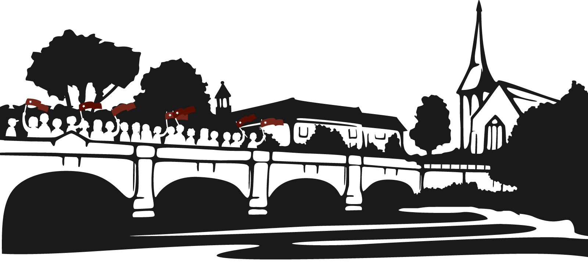

Page not found
We're sorry. The page you are looking for is not here. Go back to the homepage
I love fools' experiments. I am always making them.

Friday, 27 September 2013
Shropshire Conference Centre, Shrewsbury
We're sorry. The page you are looking for is not here. Go back to the homepage
I love fools' experiments. I am always making them.